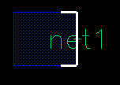

Label Creation in Manual and Auto Modes
You can create labels in manual and auto modes. The way labels are generated varies in the two modes.
Manual Mode
In manual mode, each generated label is placed with a click, at the click location. For example, in the Create Label form if you specify A<0:3> in the Label (Pattern) field, the labels are incrementally generated from A<0> through A<3> and are placed one-by-one at the click location.
With the Attach option enabled, a label is attached to the object you click. If there is no object at the click point, you are prompted to click an object to attach the label to the object. When attaching a label to an object, a dashed line extends from the label to the object and disappears when you click the object.
As you place a single label or multiple labels generated from a sequence, they get consumed from the Label (Pattern) field. For example, if A1 B2 C<0:3> is the specified label pattern, after placing A1 and B2, the Label (Pattern) field displays only C<0:3>. The Label (Pattern) field shows C<0:3> until you place C<0> through C<3>. With the Keep Label option selected by default, the pattern specified is retained in the Label (Pattern) field and can be used to generate same set of more labels. If the Keep Label option is off, the Label (Pattern) field becomes empty after you place all the labels generated from the sequence, and you are prompted to specify a label text. You can specify the same or different label text.
Auto Mode
In auto mode, label is generated based on the connectivity information of the object you want to label or from the instance name or instance master you want to label. The label is placed at the click location and is automatically attached to the object you are labeling.
In the auto mode, you can pre- or post-select the shapes to be labeled. In both selection modes, you can select shapes either fully or partially. The full and partial scenarios described in this topic are the same for both pre- and post-selection modes.
If an object is non-selectable, the label is not created on the object in both manual and auto label creation modes.
Full Selection
The label (origin) is automatically placed at the center of the shape. You can enable full selection mode by enabling the Full Select icon
on the Options toolbar or by pressing F4. Full selection of a shape in Auto mode labels the shapes in the following ways:
-
In the case of shapes such as rectangles, circles, and polygons, the label is placed at the center of the shape. In the case of a fully selected polygon, if the center of the polygon is outside the polygon, the label is placed on the midpoint of the longest edge of the polygon.
-
For a donut, the label is placed at the midpoint of the longest edge of a donut-equivalent polygon.
-
For pathsegs, the label is placed at the midpoint of the centerline.
-
For paths, the label is placed at the midpoint of the middle segment’s centerline.
Partial Selection
To enable partial selection, you can select the Partial Select icon
on the Options toolbar or press F4.
Partial selection or post-selection of a shape in auto mode labels the shapes in the following way:
-
The label is placed at the midpoint of a selected edge.
 -
With multiple selected edges, the label is placed at the midpoint of the longest selected edge. If two or more selected edges are of the same length, label is placed on the midpoint of a randomly selected same-length edge.

-
If multiple non-consecutive vertices are selected (no edge selected), the label is placed at the vertex closer to the midpoint of the shape.
-
If a combination of vertices and edges are selected, the label is placed at the midpoint of the longest selected edge.

- Partial selection of a path or pathSeg places the label origin at the end of the selection.
Related Topics
Configuring Label Creation Options
Generating Labels Using the Scan Line
Generating Labels Using Auto Step in Manual Mode
Label Generation for Overlapping Shapes
Return to top